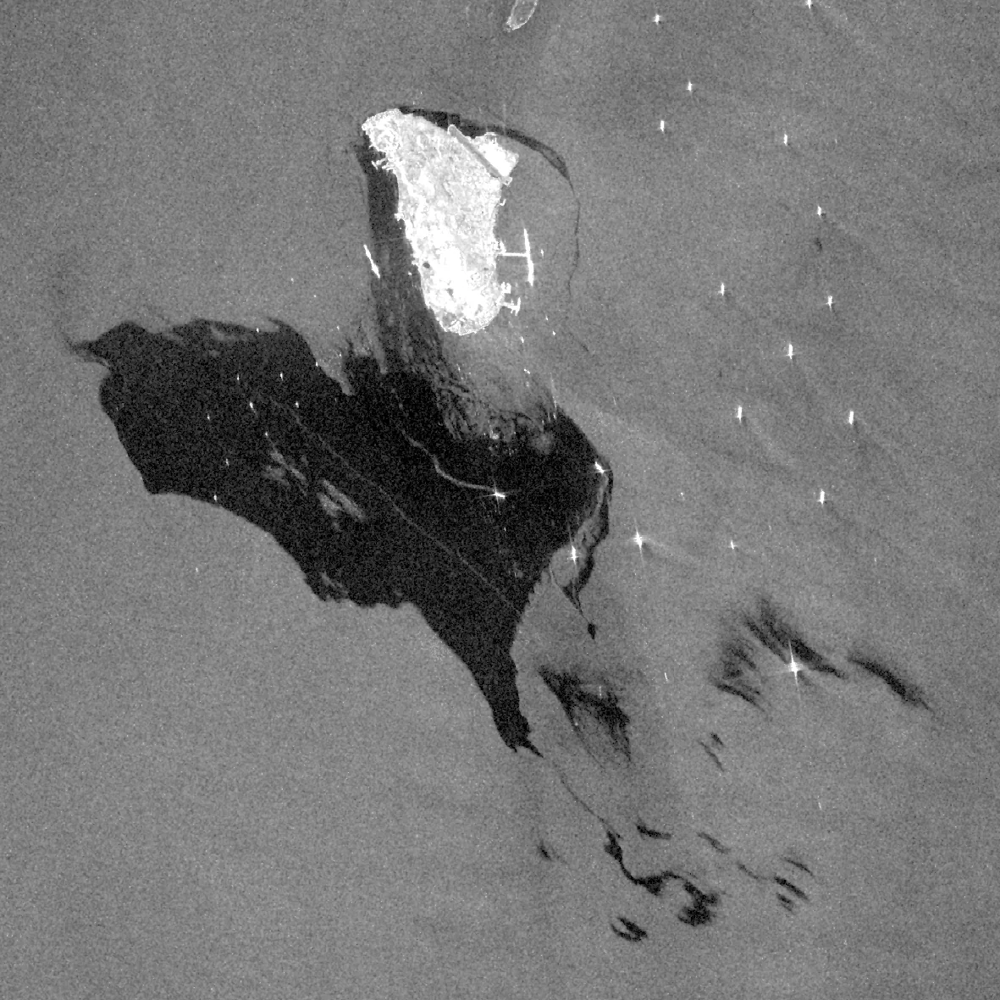
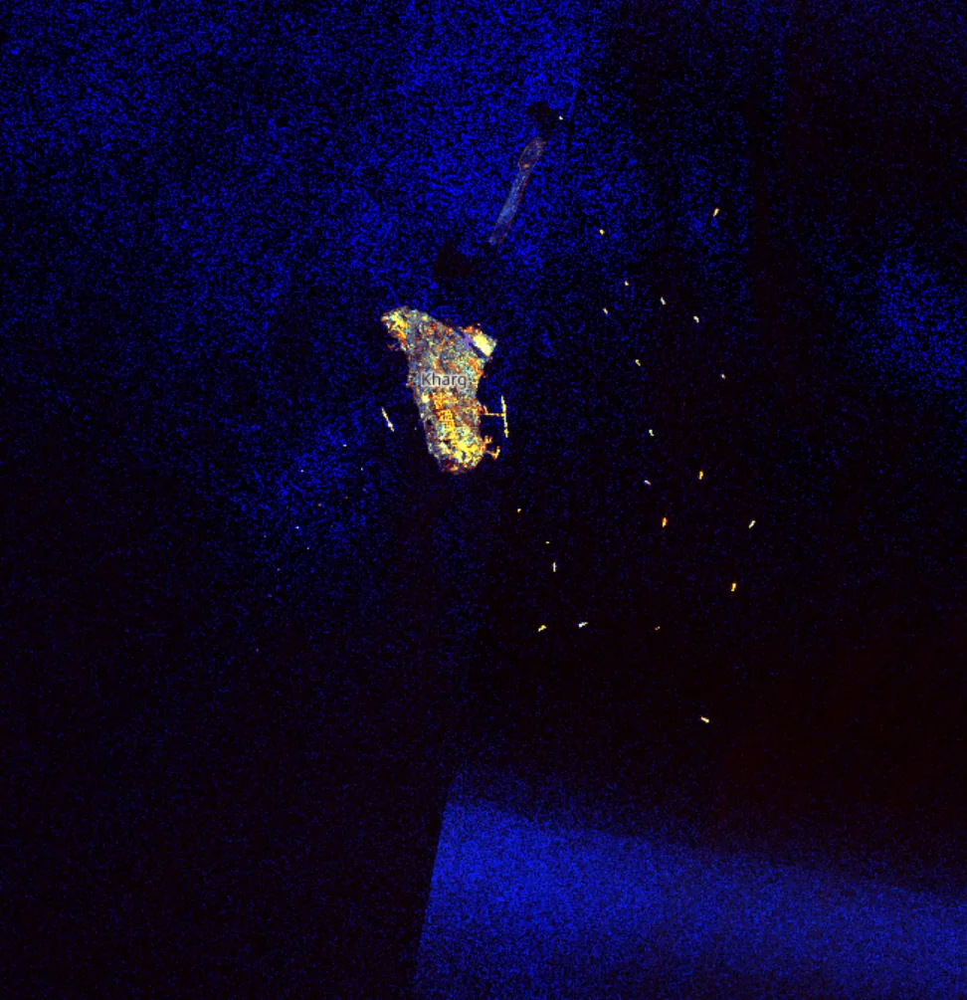
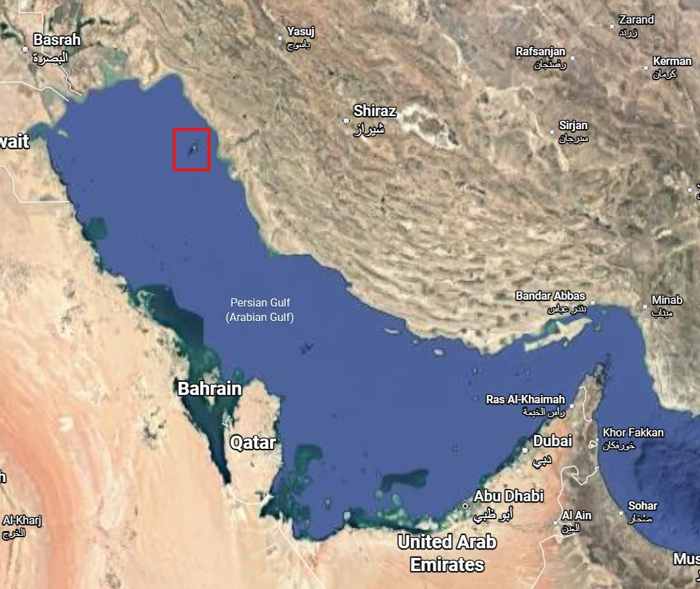

← 프로젝트 목록← All projects
SAR 기반 해상 기름유출 탐지Marine Oil Spill Detection from SAR
기름막은 해수면의 잔물결을 눌러 SAR에서 검게 보인다. 이 성질로 실제 유출 사고 2건을 탐지하고, 자연 현상과의 오탐지를 구분했다.Oil damps capillary waves, so slicks appear dark in SAR. Used that to detect two real spill events — and to separate them from look-alike natural features.
배경 · 목표Background
- SAR 영상에서 기름 슬릭(oil slick)을 탐지할 수 있는지 확인하고 실사례에 적용했다.
- 에콰도르 해안(2025.12), 이란 카르그섬(2026.05) 두 건의 실제 유출 사고를 분석했다.
- Tested whether oil slicks are detectable in SAR, then applied it to real incidents.
- Two events analysed: the Ecuadorian coast (Dec 2025) and Kharg Island, Iran (May 2026).
방법Method
- Sentinel-1 SAR 영상의 dark spot(저후방산란 영역) 분석으로 기름막 탐지.
- 기름이 모세관파를 감쇠시켜 Bragg 산란이 줄어드는 원리를 탐지 근거로 사용.
- 풍속·파고 영향을 고려해 후방산란 임계값을 설정 — 저풍속 구역은 기름 없이도 어둡게 보이기 때문.
- 광학 영상과 교차 확인해 오탐지를 걸러냄.
- Detected slicks via dark-spot (low-backscatter) analysis of Sentinel-1 scenes.
- The physical basis: oil damps capillary waves, suppressing Bragg scattering.
- Set backscatter thresholds with wind and wave state in mind — low-wind zones look dark without any oil.
- Cross-checked against optical imagery to screen out false positives.
결과Results
- SAR 기반 기름유출 탐지 분석 프로세스 확립
- 2개 사례 탐지 결과 지도 및 분석 자료 완성
- 자연 현상(저풍속 구역·해조류)과의 오탐지 구분 기준 정리
- An established SAR oil-spill detection workflow.
- Detection maps and analysis for both incidents.
- Documented criteria for separating slicks from low-wind zones and algal look-alikes.




배운 점 · 한계What I learned · Limitations
- SAR 후방산란 감쇠(damping) 메커니즘과 기름 슬릭의 물리적 관계를 이해했다.
- dark spot이 전부 기름은 아니다 — 오탐지 구분이 탐지 자체보다 중요하다는 걸 배웠다.
- Understood the damping mechanism linking backscatter suppression to oil films.
- Learned that not every dark spot is oil — telling look-alikes apart matters more than the detection itself.
산출물Deliverables
- 기름유출 탐지 분석 자료
- Oil spill detection analysis
원본 보고서와 발표자료는 사내 자료로 공개하지 않습니다. 분석 코드는 GitHub에 정리되어 있습니다.Source reports and decks are internal and not published here. Analysis code is organised on GitHub.